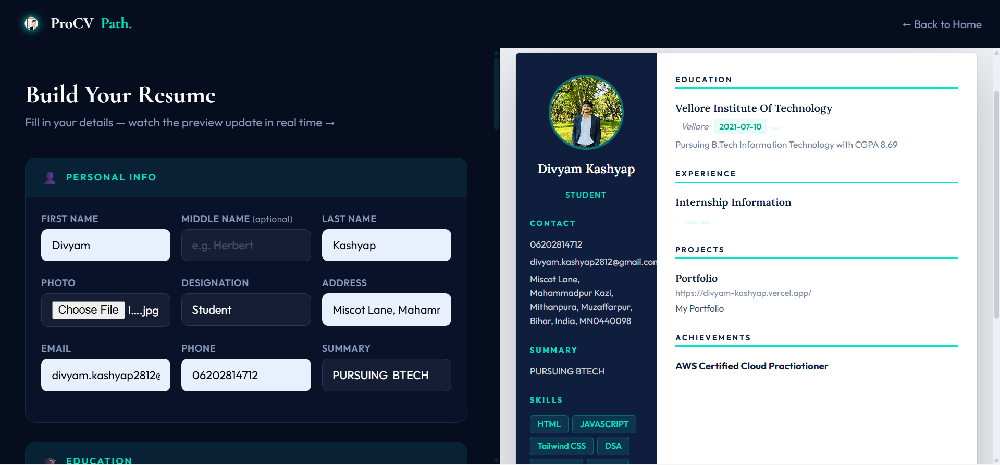

Professionally designed templates that follow the precise rules recruiters and ATS systems demand. Simple, fast, and ready in minutes.

Why ProCV Path
Every template vetted by hiring managers. Structure, hierarchy, and whitespace tuned for real human eyes — not just algorithms.
Your resume updates in real-time as you type. What you see is exactly what gets printed — no surprises, no lag.
Applicant Tracking Systems rank you before a human ever does. Our templates are engineered to sail through every major ATS.
The Process
Enter your experience, education, skills and achievements into our clean guided form.
Your professional resume takes shape live — every keystroke reflected instantly in the preview.
Hit print, save as PDF, and start landing those interviews today.
Join millions of professionals who've used ProCV Path to land roles they love.
Build My Resume — It's Free